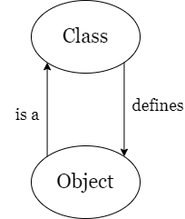

面向对象程序设计(in C++)
约 347 个字 16 行代码 1 张图片 预计阅读时间 1 分钟
Abstract
课程信息：浙江大学计算机科学与技术专业大二春夏学期预置。
-
翁恺老师授课。
-
教材： C++ Prime/Thinking in C++, Ver.2
-
Grading Policy:5%课堂表现+24%Lab & Project+16%作业+5%Mid-Term+50%Final ，考试使用 C++98 标准
一些有趣的历史
C++并不是第一个“面向对象设计”的语言。一般认为第一个符合现代定义的面向对象设计语言是 Smalltalk ； C++是第一个成熟的 OOP 语言。
C 语言¶
-
优势
-
劣势
The First C++ Program¶
#include <iostream> // 头文件
using namespace std; // using 是关键字，std是命名空间的label，
// 告诉编译器后续未指明的变量均属于std命名空间
int main()
{
cout << "Hello World!" << endl; // cout: standard output ,
// 将字符串和endofline(endl)送入cout中
return 0;
}
Using Objects¶
1. string¶
-
string是 C++中的一个类(class)。 -
要在代码中使用 string ，需要事先声明头文件
<string> -
放在任何一个类的变量中的东西都是一个对象(object)
Tip
字符串结尾带有'\0'是 C 语言独有的，我们称这种字符串为“C-string”。在其他编程语言中，一个字符串在内存中的会存储内容和长度两段数据。
容器¶
Class(类)¶
我们首先回忆一下 C 语言中的“结构体”。
我们如果想要写一个函数，让它适用于所有该定义下的结构体，我们可以给函数加一个结构体指针，例如：
new()函数申请的空间来自于虚拟地址。malloc()函数则是向操作系统申请内存空间。
Inside Class¶
Overload Functions¶

构造函数重载